| Тема 1. . | ||
| Назад | ||
|
С помощью
библиотек
можно реализовать модульность для программы,
в виде отдельных компонентов. Например бухгалтерскую программу
можно продать по модулям. Каждый модуль может быть загружен в
основной программе во время выполнения установки. Отдельные
модули загружается только при запросе функций заложенных в них,
поэтому загрузка программы выполняется быстрее.
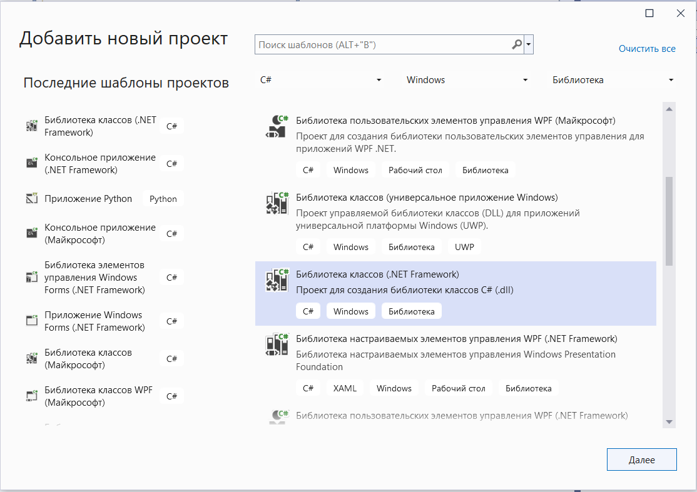 Используем шаблон Библиотека классов (NET Framework). Настроим новый проект. Укажем имя и размещение проекта в решении. В нашем Решении:
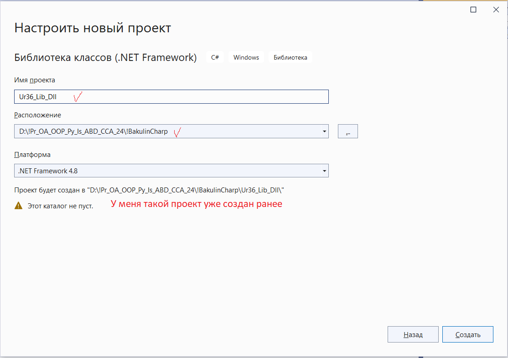 У вас откроется вкладка с классом по умолчанию. По умолчанию создается класс Class1, переименуем его в класс Arifm. Для этого перейдите в меню Вид - > Классы или выполните сочетание клавиш Ctrl + W, с последующем нажатием клавиши C.
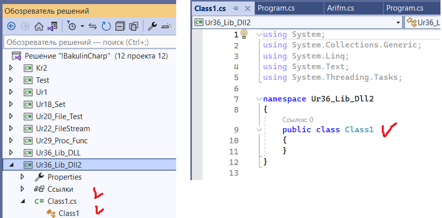 Добавим в класс Arifm несколько методов и добавим к ним описание. Сделаем класс статическим.
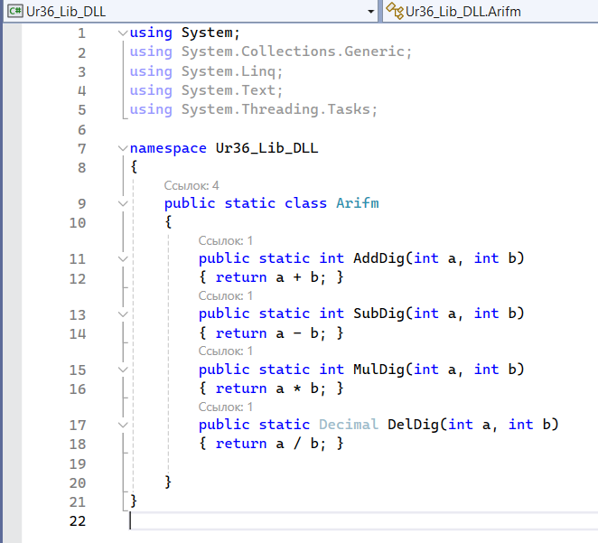 Выполним сборку библиотеки
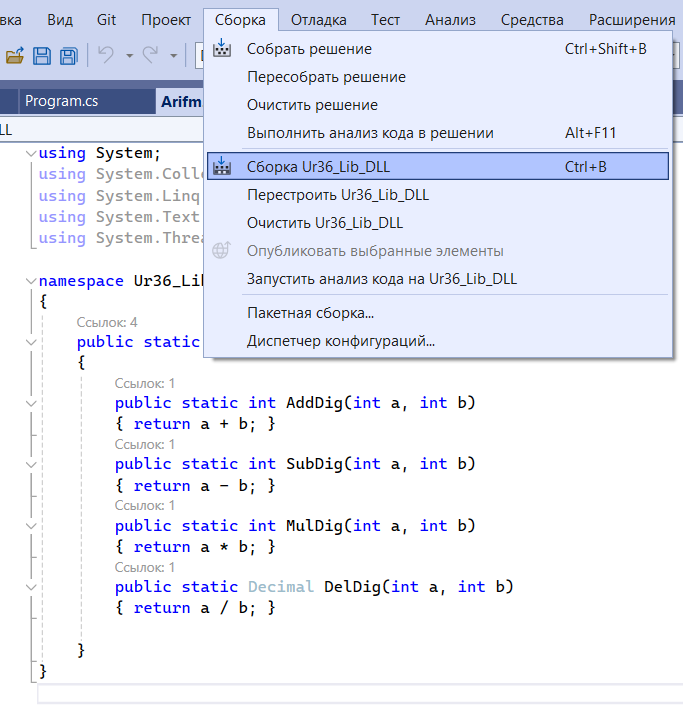 В результате скомпилируется новый проект, библиотека DLL
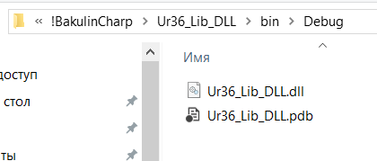
Для проверки
работоспособности библиотеки создадим тестовый проект. Выполните Файл
-> Создать -> Проект…
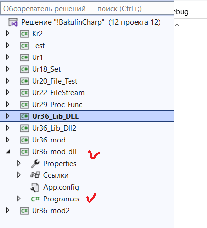 После создания проекта, в обозревателе решений добавим в проект созданную ранее библиотеку Ur36_Lib_DLL.dll сделайте клик правой клавишей мыши по разделу «Ссылки» и выберете в появившемся контекстном меню пункт «Добавить ссылку…».
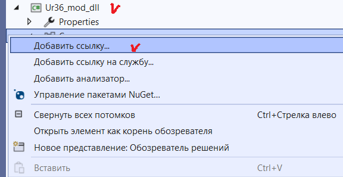
Выберете
вкладку «Обзор» и укажите вашу библиотеку.
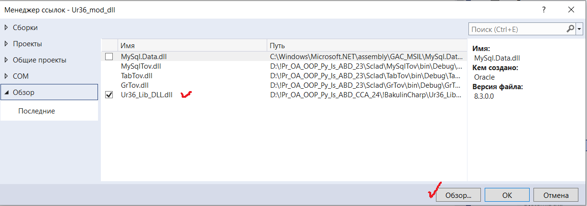
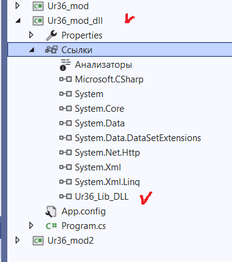 Добавим код в созданный проект и протестируем работу библиотеки.
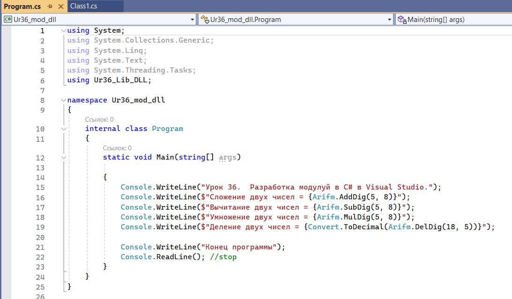
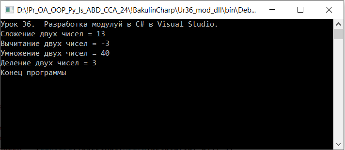 |
||
| Конспект подготовлен Бакулиным А. М. 2012 год. | ||